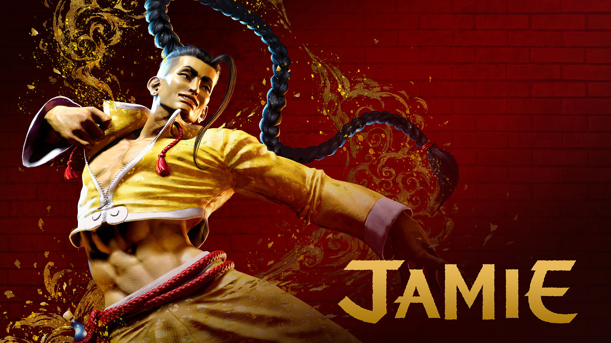
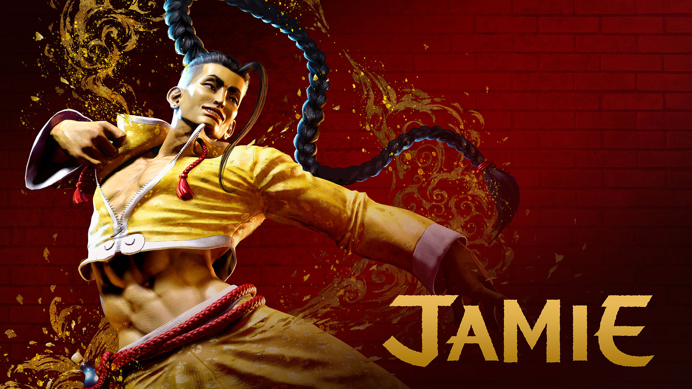

突然ですが、スト6やばくないですか？情報の量がすごすぎる。お前ほんとにカプコンか？
今回公開されたのは新登場キャラクターの春麗とジャミー
 

スト2からお馴染みの地上戦最強キャラ春麗に、悪名高きユンヤン兄弟を信仰している新キャラクター・酔拳使いのジャミー。いいメンツですね。
さらに新システム「ドライブシステム」や初心者救済のための「モダンタイプ」今回の開発はやる気が違うことが伺えます。
今回は従来のストリートファイターシリーズと打って変わって一人用モードも充実しているようなので、新規プレイヤーが増えたらとても嬉しいです。
以上御宮間でした。